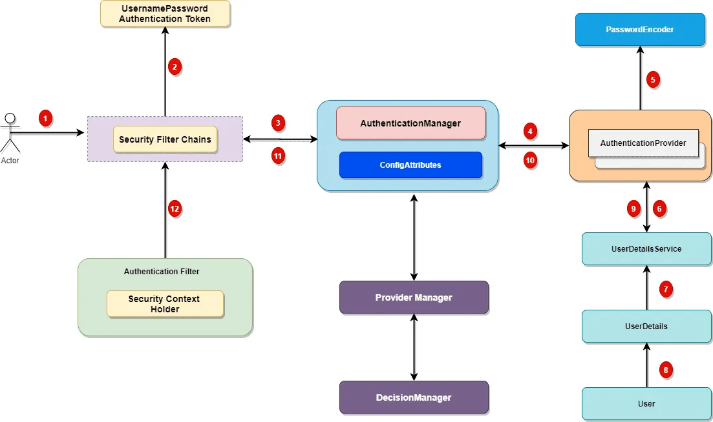
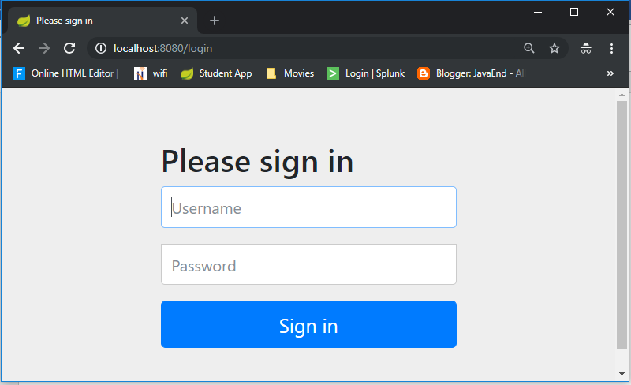

7. SpringBoot - Security
Spring Security is a framework that focuses on providing both authentication and authorization (or -access-control”) to Java web application and SOAP/RESTful web services.
Spring Security currently supports integration with all of the following technologies:
-
HTTP basic access authentication
-
LDAP system
-
OpenID identity providers – Google, Facebook etc
-
JAAS API: JAAS stands for Java Authentication and Authorization Service. This is a pluggable module which is implemented in Java and the Spring Security Framework uses it for its authentication purposes.
-
Single Sign-On: This allows the user to get access to multiple applications with only one account (username and password).
-
CAS Server
-
ESB Platform
-
Your own authentication systems
Spring Security Architecture
Spring security comes with a set of security filters. Each request to the server is intercepted by these filters. These filters will process the request based on the logic and will pass or reject the incoming request, let’s look at the distinct steps of the authentication process.

1. Incoming HTTP Request
Each incoming request will go through a chain of filters for authentication and authorization process. Look at the step 1 in above diagram, each request is passing through the security filter chain. Keep in mind the following points.
-
Each request will pass through the filters until it reaches relevant authentication filter.
-
Each request can go through a distinct set of security filters. We can configure filters by request patterns or even based on the request headers.
-
In above diagram, login request goes through the filter chains and reaches to the UsernamePasswordAuthenticationFilter.
-
Similarly, a basic authentication request goes through the chains of filters until it reaches BasicAuthenticationFilter.
2. AuthenticationToken Based on User Credentials
For the user login, once the authentication request reached the authentication filter, it will extract the username and password from the request payload. Spring security will create an Authentication object based on the username and password. This is how the Authentication objection creation look like:
UsernamePasswordAuthenticationToken authentication
= new UsernamePasswordAuthenticationToken(username, password);
3. Authentication Manager
Authentication Manager is the core for the Spring security authentication process. AuthenticationManager is the API that defines how Spring Security’s Filters perform authentication.
public interface AuthenticationManager {
Authentication authenticate(Authentication authentication)
throwsAuthenticationException;
}
Before we move ahead, let’s cover important points for the AuthenticationManager.
-
Internally the AuthenticationProvider responsible to perform the authentication process.
-
ProviderManager manager is the most used implementation of AuthenticationProvider.
-
ProviderManager delegates the request to the list of AuthenticationProvider.
4. AuthenticationProviders
The AuthenticationProvider are responsible to process the request and perform a specific authentication. It provides a mechanism for getting the user details with which we can perform authentication. This is how the AuthenticationProvider interface looks like:
public interface AuthenticationProvider {
Authentication authenticate(Authentication authentication) throws
AuthenticationException;
boolean supports(Class <?> authentication);
}
Our AuthenticationProvider can’t execute directly but we can configure multiple providers using the AuthenticationProvider.
If you are curious, here is the list of some OOTB authentication providers.
-
DaoAuthenticationProvider.
-
JAAS Authentication
-
OpenID Authentication
-
X509 Authentication
-
SAML 2.0
-
OAuth 2.0
-
RememberMeAuthenticationProvider
-
LdapAuthenticationProvider
5. Custom Authentication Provider
For enterprise applications, we may need a custom authentication provider.
Implement the AuthenticationProvider interface to create a custom authentication
provider for your application.
@Component
public class CustomAuthenticationProvider implements AuthenticationProvider {
@Override
public Authentication authenticate(Authentication auth) throws AuthenticationException {
String username = authentication.getName();
String pwd = authentication.getCredentials().toString();
if ("javadevjournal".equals(username) && "pass".equals(pwd)) {
return new UsernamePasswordAuthenticationToken(username, password, Collections.emptyList());
} else {
throw new BadCredentialsException("User authentication failed!!!!");
}
}
@Override
public boolean supports(Class<?>auth) {
return auth.equals(UsernamePasswordAuthenticationToken.class);
}
}
The last step is to configure our custom authentication provider with Spring security. We do that by creating a custom configuration class and extending the WebSecurityConfigurerAdapter.
@Configuration
public class WebSecurityConfig extends WebSecurityConfigurerAdapter {
@Autowired
CustomAuthenticationProvider customAuthenticationProvider;
@Override
public void configure(AuthenticationManagerBuilder auth) throws Exception {
//configuring our custom auth provider
auth.authenticationProvider(customAuthProvider);
}
}
6. Spring Security UserDetailsService
Not all, but few authentication providers may need UserDetailsService to get the
user details stored in the database by username (e.g.
DaoAuthenticationProvider). Most of the standard web application may use the
UserDetailsService to get user information during login process. This is how the
UserDetailsService interface look like:
package org.springframework.security.core.userdetails;
public interface UserDetailsService {
UserDetails loadUserByUsername(String var1) throws UsernameNotFoundException;
}
It’s a common use case to define a custom UserDetailsService for our application.
7. Authentication and Authentication Exception
During the authentication process, if the user authentication is successful, we will send a fully initialized Authentication object back. For failed authentication, AuthenticationException will be thrown. A fully populated authentication object carries the following details:
-
User credentials.
-
List of granted authorities (for authorization).
-
Authentication flag.
public interface Authentication extends Principal, Serializable {
Collection<? extends GrantedAuthority> getAuthorities();
Object getCredentials();
Object getDetails();
Object getPrincipal();
boolean isAuthenticated();
void setAuthenticated(boolean var1) throws IllegalArgumentException;
}
8. Setting Authentication SecurityContext
The last step on the successful authentication is setting up the authentication object in the SecurityContext. It wraps the SecurityContext around the SecurityContextHolder. Keep in mind following points:
-
SecurityContextHolder is where Spring Security stores the details about authenticated users.
-
Spring security will not validate how the SecurityContextHolder is populated.
-
If it finds values in the SecurityContextHolder, it assumes that current user is an authenticated user.This is how the SecurityContextHolder populates
SecurityContext context = //get the context from security holder
UsernamePasswordAuthenticationToken authentication = new UsernamePasswordAuthenticationToken(username, password);
context.setAuthentication(authentication);
SecurityContextHolder.setContext(context);
Ref.: https://www.javadevjournal.com/spring-security/spring-security-authentication/

Spring Security Authentication Types
-
Web Security Authentication (@EnableWebSecurity)
-
Basic Authenication
-
In-Memory Authentication
-
JDBC Authentication
-
LDAP Authentication
-
-
JWT(JSON Web Token) Authentication
-
OAuth 2.0 SSO Authentication
-
REST API
With the latest Spring Security and/or Spring Boot versions, the way to configure Spring Security is by having a class that:
-
Is annotated with @EnableWebSecurity.
-
Extends WebSecurityConfigurer, which basically offers you a configuration DSL/method. With those methods, you can specify what URIs in your application to protect or what exploit protections to enable/disable.
Here’s what a typical WebSecurityConfigurerAdapter looks like
@Configuration
@EnableWebSecurity // (1)
public class WebSecurityConfig extends WebSecurityConfigurerAdapter { // (1)
@Override
protected void configure(HttpSecurity http) throws Exception { // (2)
http
.authorizeRequests()
.antMatchers("/", "/home").permitAll() // (3)
.anyRequest().authenticated() // (4)
.and()
.formLogin() // (5)
.loginPage("/login") // (5)
.permitAll()
.and()
.logout() // (6)
.permitAll()
.and()
.httpBasic(); // (7)
}
}
-
A normal Spring @Configuration with the @EnableWebSecurity annotation, extending from WebSecurityConfigurerAdapter.
-
By overriding the adapter’s configure(HttpSecurity) method, you get a nice little DSL with which you can configure your FilterChain.
-
All requests going to / and /home are allowed (permitted) - the user does not have to authenticate. You are using an antMatcher, which means you could have also used wildcards (*, \*\*, ?) in the string.
-
Any other request needs the user to be authenticated first, i.e. the user needs to login.
-
You are allowing form login (username/password in a form), with a custom loginPage (/login, i.e. not Spring Security’s auto-generated one). Anyone should be able to access the login page, without having to log in first (permitAll; otherwise, we would have a Catch-22!).
-
The same goes for the logout page
-
On top of that, you are also allowing Basic Auth, i.e. sending in an HTTP Basic Auth Header to authenticate.
1.Spring Security – Quick Start Example
We have SpringBoot Application, which doesn’t have login page. After running application, it will show all Employees Page.
We are going to add Spring Security jar to this project. spring-boot-starter-security: take care of all the required dependencies related to spring security.
<dependency>
<groupId>org.springframework.boot</groupId>
<artifactId>spring-boot-starter-security</artifactId>
</dependency>
This will include the SecurityAutoConfiguration class – containing the initial/default security configuration.
Just Run the project & see the magic – It will Directly open Login Page

We never created this login form, but from where it came from?
In our application, we did not create this login page but configured the Spring Security. This is a built-in login page provided by the framework itself to authenticate the user.SpringSecurity default comes with login page & you can login with generated password which is already printed in the console
Using generated security password: **8b4667a4-cc3a-47fd-b51f-b6f5e83745df**
Def.user name is: **user**
You can change the password by providing a security.user.password. This and other useful properties are externalized via SecurityProperties (properties prefix “security”).
security.user.name=user
security.user.name=password
security.basic.enabled=true
Thus, by just adding the spring boot security starter dependency the basic security has already been configured by default. Let’s customize the security configuration by writing our own authorization and authentication. For this create a new class SecurityConfig that extends the WebSecurityConfigurerAdapter and overrides its methods.
To discard the security auto-configuration and add our own configuration, we need to exclude the SecurityAutoConfiguration class.
@SpringBootApplication(exclude = { SecurityAutoConfiguration.class })
public class SpringBootSecurityApplication {
public static void main(String[] args) {
SpringApplication.run(SpringBootSecurityApplication.class, args);
}
}
Or by adding some configuration into the application.properties file:
spring.autoconfigure.exclude=org.springframework.boot.autoconfigure.security.SecurityAutoConfiguration
2.Spring Security – Basic & In-Memory Authentication Example
If we are disabling security auto-configuration, we need to provide our own configuration by creating new class annotated with @EnableWebSecurity which extends WebSecurityConfigurerAdapter.
Spring Security provides HTTP basic authentication to authenticate the user at the client-side and send the user credentials with the request header to the server. The server receives these credentials, extract them from the header, and map them with the existing record to validate the user.
The BasicAuthenticationFilter handles the request and check whether the
request contains an authentication header or not. The httpBasic() method enables
the Basic HTTP security in our application. Let’s create a project and
implements HTTP security.
@Configuration
@EnableWebSecurity
public class SecurityConfig extends WebSecurityConfigurerAdapter {
@Override
public void configure(HttpSecurity http) throws Exception {
// It allows configuring web based security for specific http requests
http.authorizeRequests()
.anyRequest().authenticated()
.and()
.formLogin()
.and()
.httpBasic(); // This means it is Basic Authenication
}
@Bean
@Override
public UserDetailsService userDetailsService() {
UserDetails user =
User.withDefaultPasswordEncoder()
.username("user")
.password("user")
.roles("USER")
.build();
return new InMemoryUserDetailsManager(user);
// This means We probive User data using InMomory
}
}
Here we provided Static user conntenet. This type of Authurization Known as In Memory Authrization.
Let’s summarize what we did in order to add Spring Boot Security to his web app. To secure his web app,
-
we added Spring Boot Security to the classpath/maven.
-
Once it was in the classpath, Spring Boot Security was enabled by default.
-
Then customized the security by extending WebSecurityConfigurerAdapter and added his own configure and userDetailsServiceimplementation.
3.Spring Security – Custom Login Form
By default, the Spring Security framework provides its own login page the get user credentials but also allows us to set our own custom login page.
It is useful when we want to render a login page that matches the company website theme. We will do it by creating a login.jsp. It will submit to the “/authenticateTheUser” action and then Spring Security will perform authentication based on the provided input.
EmployeeController.java – add /login to display login page
@GetMapping("/login")
public String login() {
return "login";
}
SecurityConfig.java
We used HttpSecurity class to configure the login page. The loginPage() is used
to specify our login.jsp page. We can also use any other name for login form
such as login-form.jsp or user-login.jsp and then specify the mapping to this
method. The “/login” value passed here will map to the controller’s action
and then render the JSP page.
@Override
public void configure(HttpSecurity http) throws Exception {
http.authorizeRequests().anyRequest().
authenticated().and()
.formLogin()
.loginPage("/login")
.loginProcessingUrl("/authenticateTheUser").permitAll();
}
Now It will display our own custom form.

Custom Error message
If the user enters the wrong credentials then Spring Security responds by attaching an error parameter to the URL.Update login.jsp page
<%@ taglib uri="http://java.sun.com/jsp/jstl/core" prefix="c"%>
<c:if test="${param.error!=null}">
<p style="color: red">You entered wrong credentials!</p>
</c:if>
Logout User
To implement this feature, follow these steps
-
Add a Logout Button
-
Configure Security
-
Show Message
1. Add a Logout Button(index.jsp)
add a button to the JSP page that enables logout to the user. This button is a
submit button that submits a form request to the logout URL that will be handle
by Spring Security. Put it on the JSP home page.
<form:form
action="${pageContext.request.contextPath}/logout"
method="post">
<input type="submit" value="logout" class="list-group-item list-group-item-action">
</form:form>
2. Configure Security(SecurityConfig.java)
Now, update the SecurityConfig.java class by adding logout() and
permitAll() method.
-
logout() method will logout the user
-
permitAll() method give access to all the users to use the logout feature.
.logout().permitAll();
@Override
public void configure(HttpSecurity http) throws Exception {
// 2.Custom Login Form
http.authorizeRequests().anyRequest()
.authenticated()
.and()
.formLogin()
.loginPage("/login")
.loginProcessingUrl("/authenticateTheUser")
.permitAll()
.and()
.logout()
.permitAll();
}
3.Show Message(login.jsp)
Now, set a message to show the user when the user logged out successfully. Add
it to the login.jsp to display a logout message to the user after successful
logout.
<c:if test="${param.logout!=null}">
<p style="color: green">You have successfully logged out.!</p>
</c:if>
Remember Me Feature
remember-me feature of Spring Security allows a user to remember even after the session is closed. It performs automatic login by using the stored cookies.
An application that has a remember-me feature, stores a cookie in the browser which is used to identify the user and avoid entering the user credentials each time to log in. So what we need to do is just simply use the rememberMe() method in the configure() method of SecurityConfig class.
@Override
public void configure(HttpSecurity http) throws Exception {
// 2.Custom Login Form
http.authorizeRequests().anyRequest()
.authenticated()
.and()
.formLogin().loginPage("/login").loginProcessingUrl("/authenticateTheUser")
.permitAll()
.and()
.logout().permitAll()
.and()
.rememberMe().key("rem-me-key")
.rememberMeParameter("remember")
.rememberMeCookieName("rememberlogin")
.tokenValiditySeconds(200);
}
Verify the Cookies
See it stores the cookie that we set in the SecurityConfig file. It has the same
name that we set and a token in encrypted form and expiring life of the cookie.
4.Spring Security – JDBC Authentication
By default, spring security expects tables named users table for storing username, passwords and authorities table for storing the associated roles.
CREATE TABLE `users` (
`username` varchar(50) NOT NULL,
`password` varchar(50) NOT NULL,
`enabled` tinyint(1) NOT NULL,
PRIMARY KEY (`username`)
) ENGINE=InnoDB DEFAULT CHARSET=latin1;
INSERT INTO `users`
VALUES
('satya','{noop}satya',1),
('a','{noop}a',1);
CREATE TABLE `authorities` (
`username` varchar(50) NOT NULL,
`authority` varchar(50) NOT NULL,
UNIQUE KEY `authorities_idx_1` (`username`,`authority`),
CONSTRAINT `authorities_ibfk_1` FOREIGN KEY (`username`) REFERENCES `users` (`username`)
) ENGINE=InnoDB DEFAULT CHARSET=latin1;
INSERT INTO `authorities`
VALUES
('satya','ROLE_ADMIN'),
('a', 'ROLE_GUEST')
Override configure(AuthenticationManagerBuilder) — this method will help us in fetching user data from DB and validate if the credentials provided by the user is valid
SecurityConfig.java
package springboot.security;
import javax.sql.DataSource;
@Configuration
@EnableWebSecurity
public class SecurityConfig extends WebSecurityConfigurerAdapter {
@Autowired
DataSource dataSource;
//Enable jdbc authentication
@Autowired
public void configAuthentication(AuthenticationManagerBuilder auth) {
auth.jdbcAuthentication().dataSource(dataSource);
}
@Override
public void configure(HttpSecurity http) throws Exception {
//3. JDBC Authenication
//role should not start with 'ROLE_' since it is automatically inserted
// ADMIN - Allowed All Operations - ADD, EDIT , DELETE
// GUEST- Allowed VIEW Operations - VIEW, SHOW
http.authorizeRequests()
.antMatchers("/").hasAnyRole("GUEST","ADMIN")
.antMatchers("/all").hasAnyRole("GUEST","ADMIN")
.antMatchers("/addEmployee").hasRole("ADMIN")
.antMatchers("/saveEmployee").hasRole("ADMIN")
.antMatchers("/deleteEmployee").hasRole("ADMIN")
.and()
.formLogin()
.loginPage("/login")
.loginProcessingUrl("/authenticateTheUser")
.permitAll()
.and()
.logout()
.permitAll()
.and()
.exceptionHandling().accessDeniedPage("/unauthorized");
}
}
5. Spring Security – LDAP Authentication
What is LDAP?
LDAP is Lightweight Directory Access Protocol that is used to interact with directory server. LDAP is a centralized directory acts as a data source, which contains all important information related to the organization such as user details, system information, etc. LDAP is used for authentication and storing information about users, groups and applications.
Spring Security provides LdapAuthenticationProvider class to authenticate a user
against a LDAP server. The equivalent XML element is
<ldap-authentication-provider>.
LDAP node is created with following keywords.
-
uid : User Id
-
cn : Common Name
-
sn : Surname
-
o : Organization
-
ou : Organizational unit
-
dn : Distinguished name
-
dc : Domain Component
When the user submits login form, then to find the user a LDAP DN is created. Suppose the username is ‘krishna’ then the actual name used to authenticate to LDAP will be the full DN as following.
uid=krishna,ou=people,dc=concretepage,dc=com
LDAP Server Configuration (Free Online)
LDAP Server Information (read-only access):
Server: ldap.forumsys.com
Port: 389
Bind DN: cn=read-only-admin,dc=example,dc=com
Bind Password: password
All user passwords are password.
Ref. https://www.forumsys.com/tutorials/integration-how-to/ldap/online-ldap-test-server/


Example Code
Pom.xml – Update Maven Dependency
<dependency>
<groupId>org.springframework.security</groupId>
<artifactId>spring-security-ldap</artifactId>
</dependency>
<dependency>
<groupId>org.apache.directory.server</groupId>
<artifactId>apacheds-server-jndi</artifactId>
<version>1.5.5</version>
</dependency>
application.properties – update LDAP Server Properties
ldap.urls=ldap://ldap.forumsys.com:389/
ldap.base.dn=dc=example,dc=com
ldap.username=cn=read-only-admin,dc=example,dc=com
ldap.password=password
ldap.user.dn.pattern = uid={0}
SpringSecurityConfig
At this point, we need to tell spring how to we are doing authentication, as in which URLs should be authenticated. We need to update Authentication provider as LDAP in our code.
@Configuration
@EnableWebSecurity
public class LDAPAuthenticationSecurityConfig extends WebSecurityConfigurerAdapter {
@Value("${ldap.urls}")
private String ldapUrls;
@Value("${ldap.base.dn}")
private String ldapBaseDn;
@Value("${ldap.username}")
private String ldapSecurityPrincipal;
@Value("${ldap.password}")
private String ldapPrincipalPassword;
@Value("${ldap.user.dn.pattern}")
private String ldapUserDnPattern;
@Override
protected void configure(AuthenticationManagerBuilder auth) throws Exception {
auth.ldapAuthentication()
.contextSource()
.url(ldapUrls + ldapBaseDn)
.managerDn(ldapSecurityPrincipal)
.managerPassword(ldapPrincipalPassword)
.and()
.userDnPatterns(ldapUserDnPattern);
}
//4. LDAP Authenication
//role should not start with 'ROLE_' since it is automatically inserted
// authenticated - Allowed All Operations - ADD, EDIT , DELETE
// permitAll- Allowed VIEW Operations - VIEW, SHOW
@Override
protected void configure(HttpSecurity http) throws Exception {
http.authorizeRequests()
.antMatchers("/login**").anonymous()
.antMatchers("/all").permitAll()
.antMatchers("/view**").permitAll()
.antMatchers("/addEmployee").authenticated()
.antMatchers("/addEmployee").authenticated()
.antMatchers("/deleteEmployee").authenticated()
.and()
.formLogin()
.loginPage("/login")
.loginProcessingUrl("/authenticateTheUser")
.permitAll()
.and()
.logout()
.permitAll()
.and()
.csrf()
.disable();
}
}
For Testing
//All UID’s password is: **password**
uid=boyle
uid=curie
uid=einstein
uid=euclid
uid=euler

We can access /all , /view** - with out login. But for /addEmployee, /saveEmployee user must login with LDAP credencials.
6. Spring Security – JWT Authentication
What is JWT Authentication

By using JWT authentication you no longer have to store user information in a session to authenticate each request. Instead, we send this information with each request along with any data we want.
When the client logs in, the server gives them a JSON Web Token (JWT). Afterward, the client has to put that token in the Authorization header of each request after the word Bearer and space.
The token has three different parts, the header, the payload, and the signature.

Create JWT Token Online
Will generate JWT Token by using JWT Online Token
Generator.Provide the payload as given
below: Provide
Claim data.We’ll have the following
claims in the payload.Sign the payload using the
hashing algorithm.
Provide
Claim data.We’ll have the following
claims in the payload.Sign the payload using the
hashing algorithm.

Example
Pom.xml
<dependency>
<groupId>io.jsonwebtoken</groupId>
<artifactId>jjwt</artifactId>
<version>0.9.1</version>
</dependency>
We have API for Employee Services
/ GET Homepage
/login GET Loginform
/all GET All Employees
/saveEmployee POST saveEmployee
Not much Important for now, Skipping
Ref. https://www.tutorialspoint.com/spring_security/spring_security_with_jwt.htm
7. Spring Security – OAuth 2.0 SSO Authentication
Spring Boot 2.x provides full auto-configuration for OAuth2 login. We just need to configure client id and client secret for OAuth2 provider such as GitHub, Facebook and Google in application.property file and we are done.
We can customize the configuration by overriding methods of WebSecurityConfigurerAdapter and using HttpSecurity.oauth2Login() method introduced in Spring 5.0.
We need to create a bean for ClientRegistrationRepository to override OAuth2
property value.
Here on this page we will create a Spring Boot Security application for OAuth2
login using GitHub, Facebook and Google authentication provider.
<dependency>
<groupId>org.springframework.boot</groupId>
<artifactId>spring-boot-starter-oauth2-client</artifactId>
</dependency>
Example
1.Genetrate github API Keys by going https://github.com/settings/developers
redirect URI as
http://localhost:8080/login/oauth2/code/github
http://localhost:8081/login/oauth2/code/google
http://localhost:8081/login/oauth2/code/facebook
Watch this : https://www.youtube.com/watch?v=R9lxXQcy-nM

2.Update application.properties
spring.security.oauth2.client.registration.google.client-id=\<your client id\>
spring.security.oauth2.client.registration.google.client-secret=\<your client
secret\>
spring.security.oauth2.client.registration.facebook.client-id=\<your client id\>
spring.security.oauth2.client.registration.facebook.client-secret=\<your client
secret\>
spring.security.oauth2.client.registration.github.client-id=4d381Dummy
spring.security.oauth2.client.registration.github.client-secret=2876951aSercrit
- Update Login Page
<a href=" /oauth2/authorization/github">Login with GitHub</a>
4.CustomOAuth2User.java
this class extends OAuthUser interface as defined by Spring OAuth2 API. this class wraps an instance of OAuth2User, which will be passed by Spring OAuth2 upon successful OAuth authentication. And we override the getName() method to return username associated with GitHub account.
public class CustomOAuth2User implements OAuth2User {
private OAuth2User oauth2User;
public CustomOAuth2User(OAuth2User oauth2User) {
this.oauth2User = oauth2User;
}
@Override
public Map<String, Object> getAttributes() {
return oauth2User.getAttributes();
}
@Override
public Collection<? extends GrantedAuthority> getAuthorities() {
return oauth2User.getAuthorities();
}
@Override
public String getName() {
return oauth2User.getAttribute("name");
}
}
5.CustomOAuth2UserService subclass of DefaultOAuth2UserService. we override the loadUser() method which will be called by Spring OAuth2 upon successful authentication, and it returns a new CustomOAuth2User object
@Service
public class CustomOAuth2UserService extends DefaultOAuth2UserService {
@Override
public OAuth2User loadUser(OAuth2UserRequest userRequest) throws OAuth2AuthenticationException {
OAuth2User user = super.loadUser(userRequest);
return new CustomOAuth2User(user);
}
}
6.OAuth2AuthenticationSecurityConfig To integrate single sign on with GitHub with traditional username and password login, update configuration for Spring security as follows
@Configuration
@EnableWebSecurity
public class OAuth2AuthenticationSecurityConfig extends WebSecurityConfigurerAdapter {
@Autowired
private CustomOAuth2UserService userService;
@Override
protected void configure(HttpSecurity http) throws Exception {
http.authorizeRequests().antMatchers("/", "/login").permitAll()
.and()
.formLogin()
.loginPage("/login")
.loginProcessingUrl("/authenticateTheUser")
.permitAll()
.and()
.logout()
.permitAll()
.and()
.oauth2Login()
.loginPage("/login")
.userInfoEndpoint()
.userService(userService);
}
}
7.Test Login using GitHub


8. Spring Security – Summary
To customize Spring Security, we need a configuration class annotated with @EnableWebSecurity annotation in our classpath. Also, to simplify the customization process, the framework exposes a WebSecurityConfigurerAdapter class.
We will extend this adapter and override both of its functions so as to:
-
Configure the authentication manager with the correct provider
-
Configure web security (public URLs, private URLs, authorization, etc.)
@EnableWebSecurity
public class SecurityConfig extends WebSecurityConfigurerAdapter {
@Override
protected void configure(AuthenticationManagerBuilder auth) throws Exception {
// TODO configure authentication manager
}
@Override
protected void configure(HttpSecurity http) throws Exception {
// TODO configure web security
}
}
9.Spring Security – Ref.
https://www.studytonight.com/spring-framework/spring-security-introduction
https://www.concretepage.com/spring-5/spring-security-ldap-authentication
https://medium.com/codeops/spring-boot-security-ldap-example-1ce1bdfc5816
https://www.logicbig.com/tutorials/spring-framework/spring-security.html
https://www.techgeeknext.com/spring/spring-boot-security-token-authentication-jwt
https://www.baeldung.com/spring-security-5-oauth2-login
https://www.codejava.net/frameworks/spring-boot/oauth2-login-with-github-example